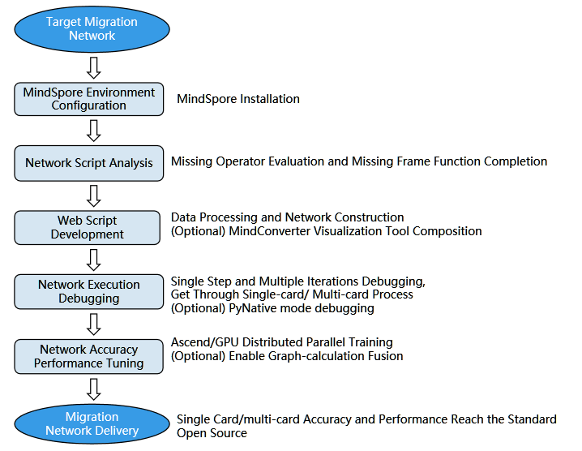

Overview

This migration guide describes the complete steps for migrating neural networks from other machine learning frameworks to MindSpore.
To prepare for the migration process, configure the necessary environment and then analyze the operators contained in the network script. MindSpore script development starts from data processing code, uses MindConverter for network building and obtains the migrated network script, and finally migrates the inference execution script. After the build is complete, the optimization process includes development and debugging of missing operators and optimization of network performance and accuracy. The migration guide provides solutions to common problems in the migration process and complete network migration examples. Examples are provided in each chapter for reference. The following figure shows the migration process.

Preparations
Before network migration, you need to install MindSpore of the latest version. This chapter describes the installation process and knowledge preparation. The knowledge preparation includes the basic introduction to the functions, scenarios, and usage methods of the MindSpore components ModelZoo and Hub. In addition, there are tutorials related to training on the cloud: using the ModelArts adaptation script, uploading datasets to OBS, and performing online training.
Network Script Analysis
Before using MindSpore to execute network scripts, you must analyze the scripts of the original framework. This chapter describes how to evaluate operators in the MindSpore framework. Common methods include querying the mapping between MindSpore operators and PyTorch/TensorFlow operators. Another part that needs to be analyzed is syntax evaluation and framework functions, including static graph syntax support.
Network Script Development
After the network script analysis is complete, you can use MindSpore to develop a new network. This chapter starts from the data processing function at the network input layer and focuses on the network script build process. The MindConverter or handwritten mapping script is used, and the visualization tool provided by PyTorch/TensorFlow is used to build graphs. The process includes the best practices and common self-check items for development, and lists common troubleshooting methods.
Operator Development and Debugging
Some operators are not supported when the network is migrated to the MindSpore framework. In addotiom to the feedback to the MindSpore developer communit, you can develop customized MindSpore operators. This chapter includes tutorials and examples for operator development, as well as common debugging skills.
Network Debugging
After the network script is developed and the operator is supplemented, you need to debug the model to ensure that the output result is correct. This chapter describes the common network debugging ideas: single-step debugging and multi-round iterative debugging. Common debugging methods include comparing subnet output results with PyNative mode. MindSpore also supports customized debugging information. At last, the solutions to common problems are provided.
Accuracy and Performance Tuning
After the network script debugging is complete and the result can be successfully output, you need to tune the model to achieve the expected performance. MindSpore provides developers with the Profiler tool which provides easy-to-use and abundant tuning functions in terms of operator performance, iteration performance, and data processing performance, to help users quickly locate and solve performance problems. The tutorials are classified into tuning on the Ascend platform and on the GPU platform, and three examples of using the Profiler tool are provided.
Inference Execution
MindSpore can execute inference tasks on different hardware platforms based on trained models and deploy online inference services based on MindSpore Serving. Model-based inference can be performed through the training parameter file or network model file. Online inference based on MindSpore Serving can access the inference service through APIs such as gRPC or RESTful.
Network Migration Debugging Example
This chapter provides a complete network migration example. Using ResNet-50 as an example, this chapter describes from how to analyze and reproduce the benchmark network, and how to develop scripts and how to debug and optimize the accuracy. In addition, this chapter lists common problems and corresponding optimization methods during the migration, for example, multi-node synchronization problems and framework performance problems.
FAQs
This chapter lists the frequently asked questions and solutions during network migration.